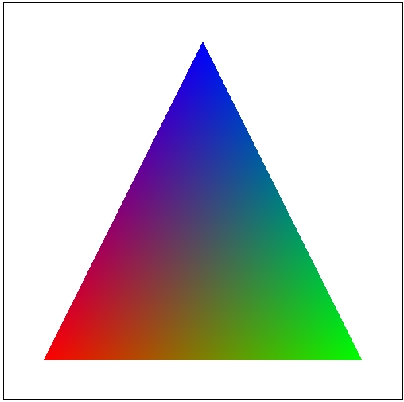
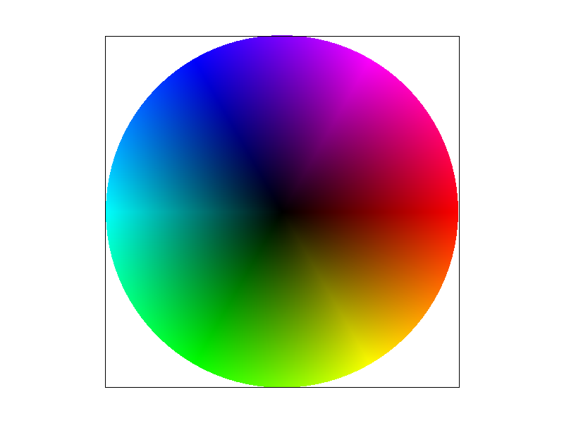

Task 4: Barycentric coordinates
- Barycentric coordinates.
Barycentric coordinates are used to determine the position of a point within a triangle. In other words, We use the three vertices of a triangle to represent a point

smoothly blended color triangle
- Image

svg/basic/test7.svg